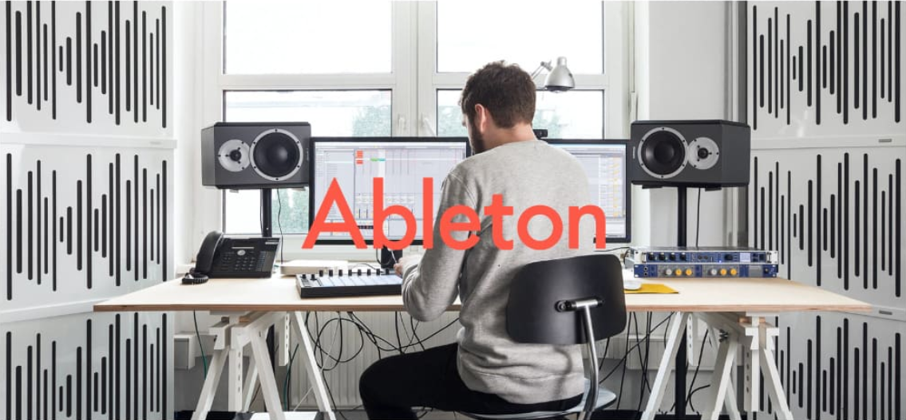
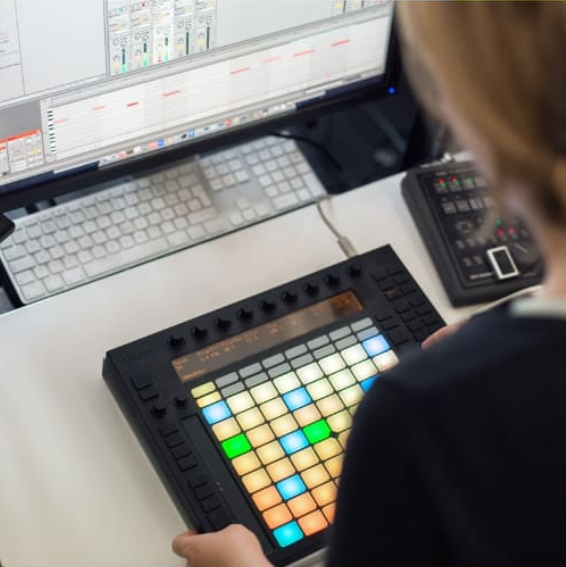
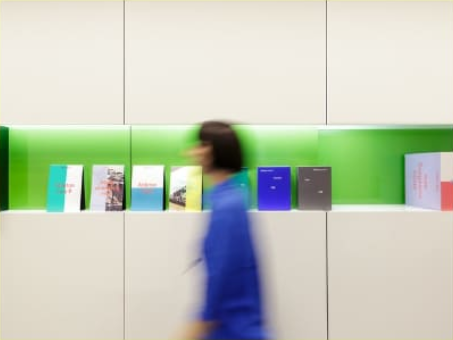
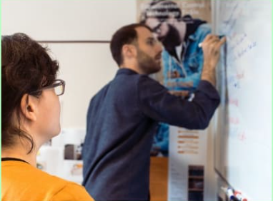
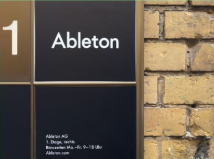
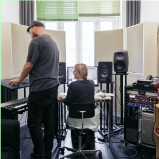
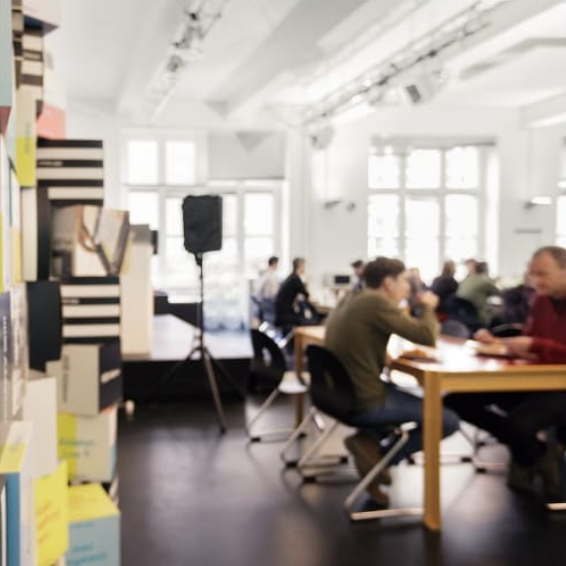

We make Live, Push and Link - unique software and hardware
for music creation and performance. With these products, our
community of users creates amazing things.
Ableton was founded in 1999 and released the first version of Live in 2001. Our products are used
by a community of dedicated musicians, sound designers, and artists from across the world.


Making music isn't easy. It takes time, effort, and learning. But
when you're in the flow, it's incredibly rewarding.
We feel the same way about making Ableton products. The driving force behind Ableton is our
passion for what we make, and the people we make it for.
Why Ableton – Juanpe Bolivar
Making music isn't easy. It takes time, effort, and learning. But
when you're in the flow, it's incredibly rewarding.
We feel the same way about making Ableton products. The driving force behind Ableton is our
passion for what we make, and the people we make it for.



We belive it takes focus to create truly outstanding instruments.
We only work on a few products and we strive to make them
great.
Rather than having a one-size-fits-all process, we try to give out people what they need to work
their magic and grow. We've learned that achieving the best results comes from building teams that
are richly diverse, and thus able to explore problems from a wider set of perspectives. We don't
always agree with each other, but opinion and debate are valued and openly encouraged.
Why Ableton – Juanpe Bolivar
We're passionate about what we do, but we're equally
passionate about improving who we are.
We work hard to foster an environment where people can grow both personally and professionally,
and we strive to create a wealth of opportunities to learn from and with each other.
Alongside an internal training program, employees are actively supported in acquiring new
knowledge and skills, and coached on applying these in their daily work. In addition, staff-
organized development and music salons are a chance to discuss new technologies, production
techniques and best practices.

We're really proud of the work
we've done so far. But there's so
much more to come.
If you'd like
to be a part of it, please join us.